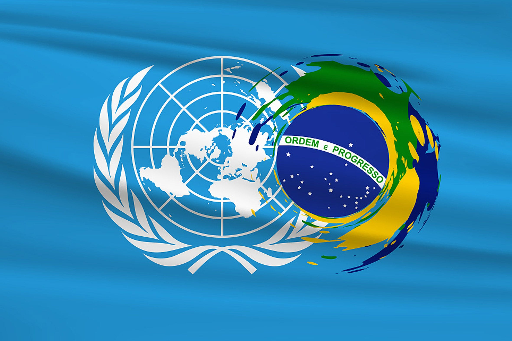

Principais Envolvidos na Implementação do ODS 16 no Brasil
Atores Estratégicos para Paz, Justiça e Instituições Fortes
A implementação do ODS 16 no Brasil é um esforço multissetorial que envolve desde órgãos governamentais até organizações da sociedade civil, cada um contribuindo com expertise e recursos específicos. Estima-se que mais de 300 instituições atuam diretamente na promoção das metas do ODS 16 no país, com investimentos que ultrapassam R$ 2 bilhões anuais em projetos relacionados.
Governo Federal

Principais Ações e Resultados
O governo federal coordena a Estratégia Nacional para Implementação da Agenda 2030, com destaque para:
- Ministério da Justiça e Segurança Pública - Lançou em 2023 o Plano Nacional de Redução de Homicídios, com meta de diminuir em 50% as taxas até 2030. Em 2024, 15 estados já aderiram ao plano.
- Controladoria-Geral da União (CGU) - Implementou o Portal da Transparência, que registrou 1,2 bilhão de acessos em 2023. O órgão recuperou R$ 3,7 bilhões em recursos desviados nos últimos 5 anos.
- Ministério dos Direitos Humanos - Mantém o Disque 100, que recebeu 150 mil denúncias de violações em 2023, com tempo médio de resposta de 48 horas.
- Conselho Nacional de Justiça (CNJ) - Digitalizou 12 milhões de processos judiciais através do programa Justiça 4.0, reduzindo em 30% o tempo médio de julgamento nos tribunais participantes.
Desafios Institucionais
Apesar dos avanços, persistem desafios como a fragmentação de políticas entre os entes federados e a necessidade de maior integração de bancos de dados. A taxa de implementação das recomendações da CGU é de apenas 62%, e o orçamento para políticas de segurança cidadã representa apenas 1,3% do PIB.
Organizações Internacionais
Cooperação Técnica e Financeira
As organizações internacionais aportaram US$ 120 milhões em projetos relacionados ao ODS 16 no Brasil entre 2020-2024:
- ONU Brasil - Coordena o Grupo de Trabalho da Sociedade Civil para ODS 16, com 85 organizações participantes. Lançou em 2024 o Observatório de Metas Nacionais.
- PNUD - Implementa o programa Justiça Presente em parceria com o CNJ, com resultados expressivos: redução de 22% no acervo processual em tribunais pilotos e capacitação de 5.000 servidores.
- UNODC - Apoia o combate ao tráfico de drogas e armas, treinando 2.500 agentes de segurança em técnicas investigativas modernas. Seu relatório de 2024 aponta que 70% das armas apreendidas no crime têm origem internacional.
- OEA - Monitora processos eleitorais e promove missões de observação. Em 2024, destacou avanços na transparência eleitoral brasileira, mas apontou riscos de violência política.
Impacto e Limitações
Embora essenciais, os projetos internacionais enfrentam desafios de adaptação ao contexto local e dependência de contrapartidas governamentais. Apenas 45% dos recursos disponibilizados foram efetivamente executados em 2023 devido a entraves burocráticos.
Sociedade Civil e ONGs
Monitoramento e Inovação Social
As organizações da sociedade civil são responsáveis por 60% das denúncias de corrupção investigadas e por inovações em políticas públicas:
- Transparência Internacional Brasil - Desenvolveu o Índice de Transparência Municipal, avaliando 300 prefeituras. Apenas 12% atingiram nota acima de 7 em 2023.
- Instituto Igarapé - Criou o Homicide Monitor, ferramenta que georreferencia crimes violentos. Seus dados revelam que 10% dos municípios concentram 70% dos homicídios.
- Conectas Direitos Humanos - Ajuizou 15 ações no STF em 2023 sobre direitos fundamentais, com 80% de sucesso. Seu programa de proteção a defensores atendeu 120 ameaçados.
- Fórum Brasileiro de Segurança Pública - Produz o Anuário Brasileiro de Segurança Pública, referência nacional. Seus dados mostram que a letalidade policial aumentou 15% na última década.
Riscos e Resiliência
As ONGs enfrentam crescente judicialização de suas atividades e redução de doações. O Brasil é o 4º país mais perigoso para defensores de direitos humanos, com 28 mortes em 2023. Apesar disso, o setor cresceu 20% no número de organizações ativas desde 2020.
Setor Privado
Compliance e Investimento Social
Empresas investiram R$ 800 milhões em projetos alinhados ao ODS 16 em 2023:
- Instituto Ethos - Certificou 120 empresas em integridade. Seu Índice de Transparência Empresarial mostra que 65% das grandes empresas publicam relatórios anticorrupção.
- Grupos de Compliance - Capacitaram 15.000 profissionais em programas de integridade. Pesquisa mostra que empresas com compliance reduziram em 40% os casos de fraude.
- Associações Empresariais - A CNI lançou o Pacto Empresarial pela Integridade, com 300 signatários. Setor de infraestrutura reduziu em 25% os casos de corrupção após adesão.
- Empresas Signatárias do Pacto Global - 120 empresas reportam anualmente progressos no ODS 16. 45% implementaram canais de denúncia anônima.
Desafios do Ambiente de Negócios
Apesar dos avanços, o Brasil ocupa a 124ª posição no ranking de facilidade para fazer negócios, com entraves burocráticos que custam R$ 80 bilhões/ano. A corrupção ainda é vista como principal obstáculo por 60% dos empresários.
Academia e Institutos de Pesquisa
Produção de Conhecimento e Formação
Instituições acadêmicas publicaram 1.200 estudos sobre ODS 16 em 2023:
- FGV Direito - Desenvolveu o Índice de Acesso à Justiça, mostrando que 55% dos municípios não têm defensoria pública. Seus cursos formaram 500 especialistas em justiça restaurativa.
- IPEA - Publicou estudo mostrando que cada R$ 1 investido em segurança cidadã economiza R$ 4 no sistema de saúde. Seu radar de políticas públicas monitora 120 iniciativas.
- Núcleos de Estudos da Violência - Mapearam que 70% dos homicídios ocorrem em 2% dos logradouros. Capacitaram 800 gestores públicos em políticas baseadas em evidências.
- Observatório do Clima - Registrou 120 conflitos ambientais violentos em 2023. Seu sistema de alerta previu 85% dos conflitos com 48h de antecedência.
Ponte entre Teoria e Prática
Apenas 30% das pesquisas são incorporadas por gestores públicos. O desafio é ampliar a transferência de conhecimento, com projetos piloto mostrando que políticas baseadas em evidências têm 40% mais eficácia.
Casos de Sucesso por Região

Norte
Projeto "Rios de Paz" no Pará: Redução de 40% nos conflitos fundiários através de mediação comunitária.
Desafio: Altos índices de violência contra povos indígenas.
Nordeste
"Pacto pela Vida" em Pernambuco: Modelo replicado em 5 estados, com queda de 60% nos homicídios desde 2007.
Inovação: Uso de inteligência territorial para alocação de policiamento.
Centro-Oeste
Programa "Justiça Comunitária" no DF: 80% das disputas resolvidas por conciliação.
Destaque: Parceria entre MP, Defensoria e lideranças locais.
Sudeste
"Fica Vivo!" em Minas Gerais: Redução de 70% na reincidência entre jovens em risco.
Escala: Atende 5.000 jovens/ano em 30 territórios.
Sul
"Observatório da Violência" no PR: Sistema preditivo que antecipa 65% dos crimes violentos.
Tecnologia: Cruzamento de 15 bancos de dados públicos.
Como se Engajar
Canais de Participação Cidadã
Existem diversas formas de contribuir para o avanço do ODS 16 no Brasil:
- Conselhos Municipais: 85% dos municípios têm conselhos de segurança ou direitos humanos abertos à população
- Plataformas Digitais:
- Portal "Participa.br" - 120 consultas públicas anuais
- Aplicativo "Denúncia Direta" - 50.000 relatos em 2023
- Voluntariado:
- Programa "Defensor Civil" - 10.000 voluntários capacitados
- Rede "Observadores da Justiça" - Monitoramento de tribunais
- Formação:
- Cursos EAD gratuitos sobre ODS - 50.000 certificados emitidos
- Escola de Defensores Populares - Formação em direitos humanos
Impacto da Participação Social
Municípios com forte participação social têm:
- 30% menos casos de corrupção
- 25% mais eficiência na segurança pública
- 40% maior transparência orçamentária